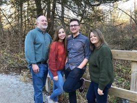

Hello everybody, allow me to introduce myself. I am currently studying Computer Science and am in my Junior year. I am currently working on campus in Disability Services as a software tech. I test websites needed in classes for accessability and give feedback to course designers. I have been a member my entire life. I served a mission in Mongolia and got back December of 2019. My favorite scripture is Mormon 9:21.